Toda semana o app forma pares de rivais na sua cidade, em cada modalidade que você joga. Você tem um rival só, e ele tem você de volta. Na Início você vê quem é, a chance de vitória de cada um e por que vocês caíram juntos, e desafia com um toque, sem gastar o seu desafio grátis da semana.
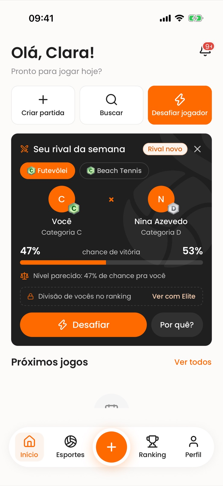
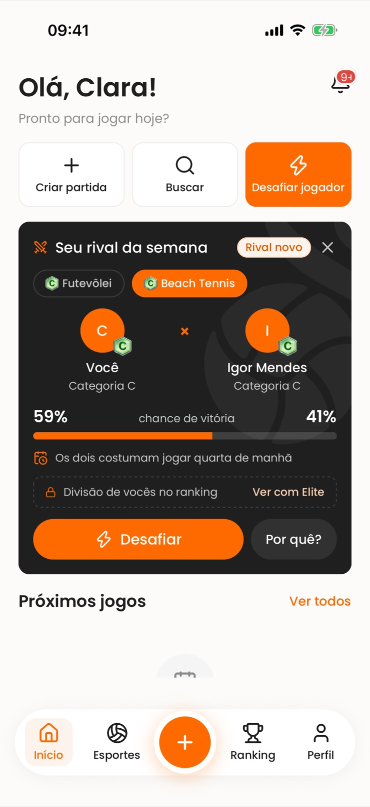
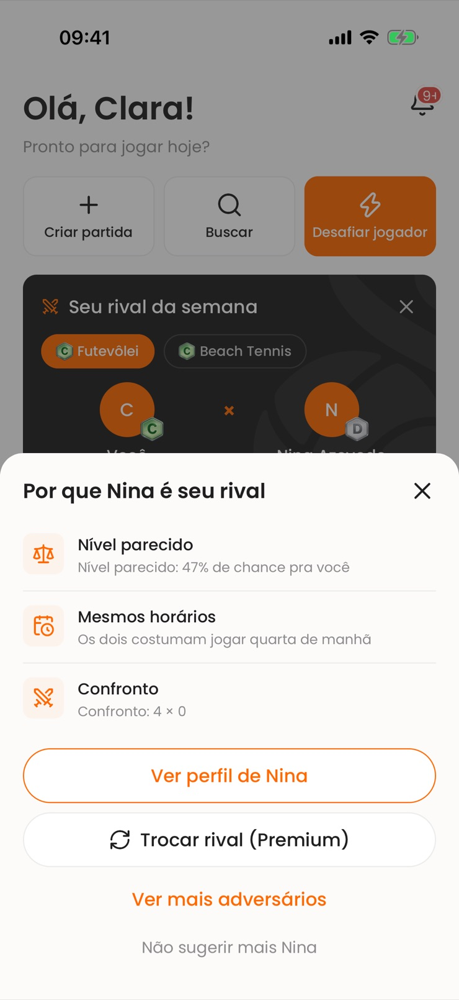
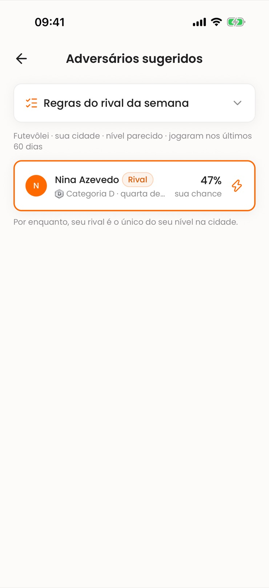
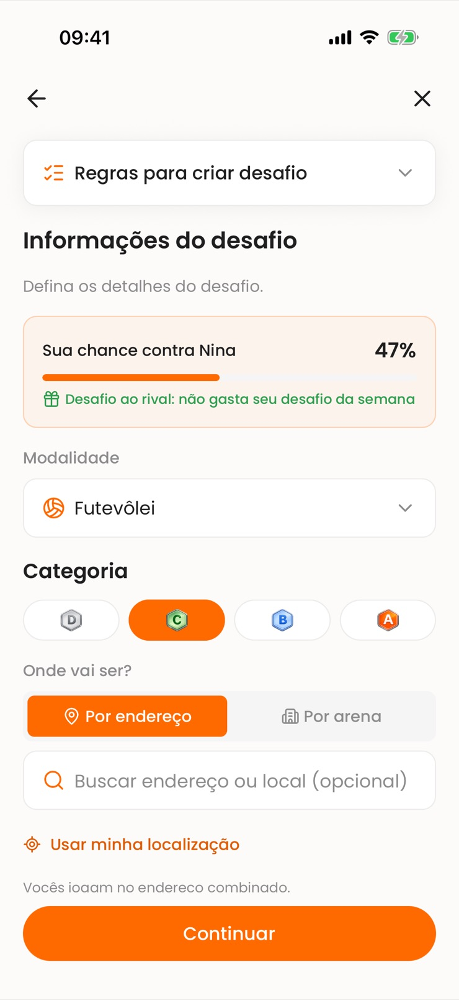
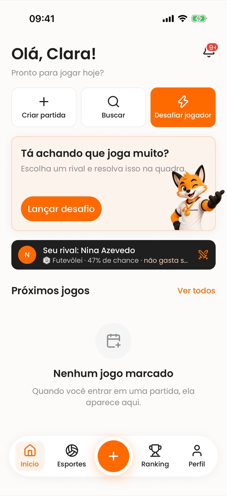
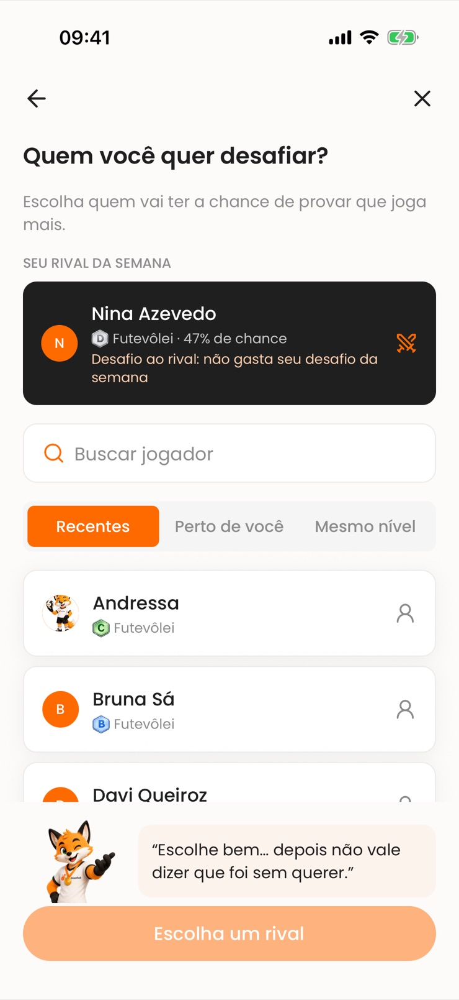
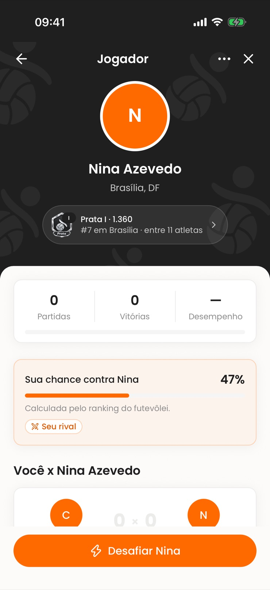
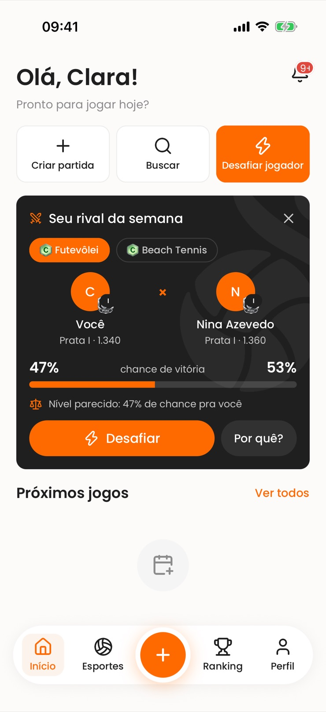
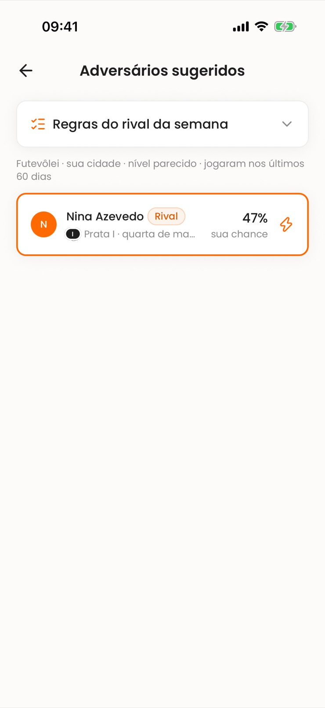
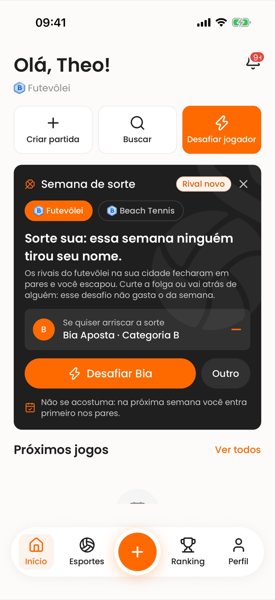
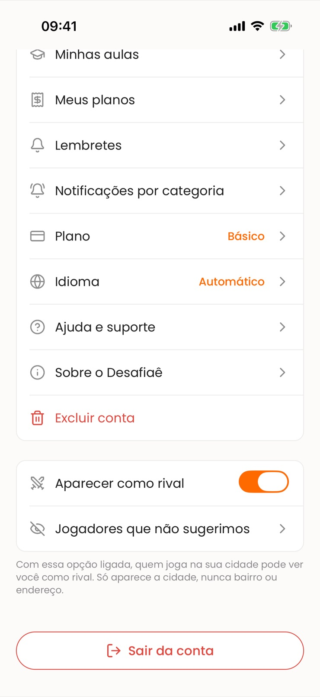
Uma vez por semana, no mesmo dia e hora pra todo mundo (hoje, domingo às 19h). Na virada chega uma notificação com o rival e a chance. Durante a semana chega também um lembrete às 18h da véspera do horário em que vocês costumam jogar ou, sem horário em comum, na quinta às 18h, se vocês ainda não se desafiaram.
Confira se a cidade está preenchida no perfil e se "Aparecer como rival" está ligado. Também é preciso jogar a modalidade: ter jogo de ranking nela nos últimos 60 dias ou, se ainda não jogou, ter o nível declarado nela e ter aberto o app nos últimos 30 dias. Se ninguém do seu nível sobrou na cidade, você fica na semana de sorte.
O primeiro desafio que você lança ao rival na semana não conta no limite do desafio grátis. Os seguintes contam normalmente. Na semana de sorte, esse desafio livre vale pra qualquer pessoa.
Pelo rating da aba Ranking na modalidade. Se um dos dois tem menos de 10 partidas no ranking, a chance não aparece, e o par sai pelo mesmo nível declarado.
No Premium e no Elite, uma vez por semana, pela folha "Por quê?". Entra o melhor adversário seguinte, e quem foi trocado não fica sabendo e continua com o rival dele.
Na folha "Por quê?", toque em "Não sugerir mais". Vale a partir da próxima semana, nos dois sentidos. Pra desfazer, vá em Configurações, "Jogadores que não sugerimos".
O rival some até a próxima semana. O mesmo par só pode voltar depois de 4 semanas.
O emblema da divisão e o rating no card do rival e a lista completa de adversários sugeridos, com a chance contra cada um. O rival, a chance e o desafio que não gasta o grátis são de todos os planos.
Não. Só aparece a cidade, nunca bairro ou endereço.